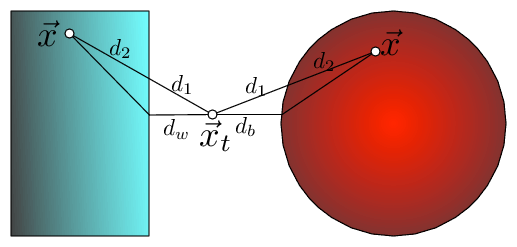

In other words: if the distance to the partition is larger than the distance to our closest neighbor, we know that none of the data points inside that partition can be closer.Fig: Partitioning the feature space.
 Fig 2: The bounding of the distance between $\vec x_t$ and $\vec x$ with KD-trees and Ball trees (here $\vec x$ is drawn twice, once for each setting). The distance can be dissected into two components $d(\vec x_t,\vec x)=d_1+d_2$, where $d_1$ is the outside ball/box component and $d_2$ the component inside the ball/box. In both cases $d_1$ can be lower bounded by the distance to the wall, $d_w$, or ball, $d_b$, respectively i.e. $d(\vec x_t,\vec x)=d_1+d_2\geq d_w+d_2\geq d_w$.
Tree Construction:Fig: The partitioned feature space with corresponding KD-tree.
Which partitions can be pruned?
Note: Steps 3 & 4 pick the direction with a large spread ($x_{1} - x_{2}$)